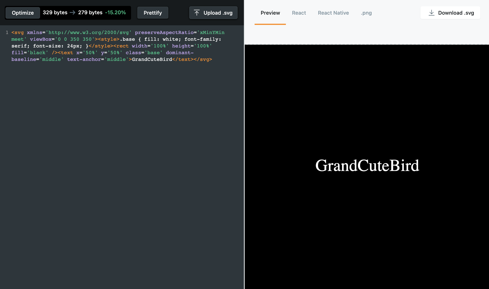
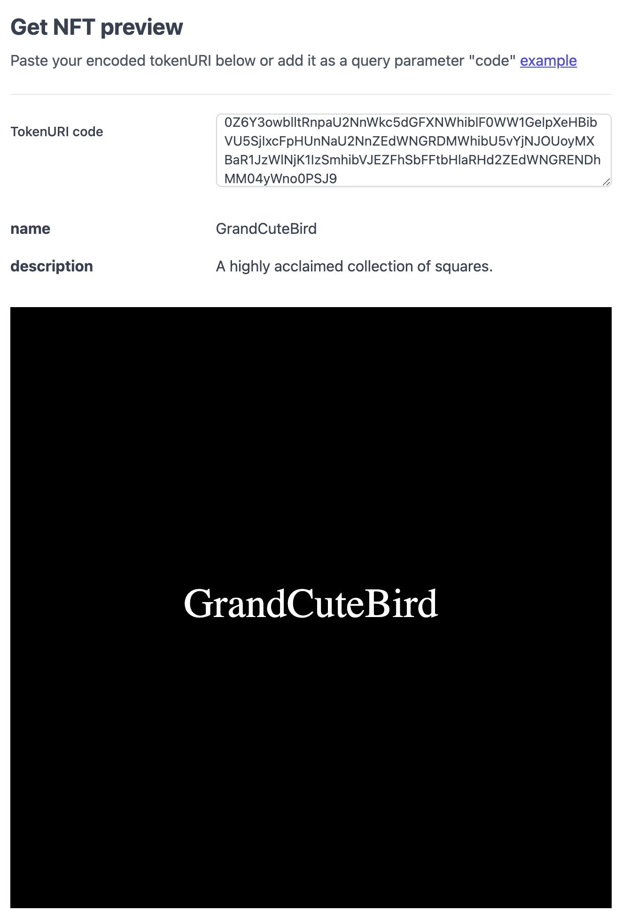
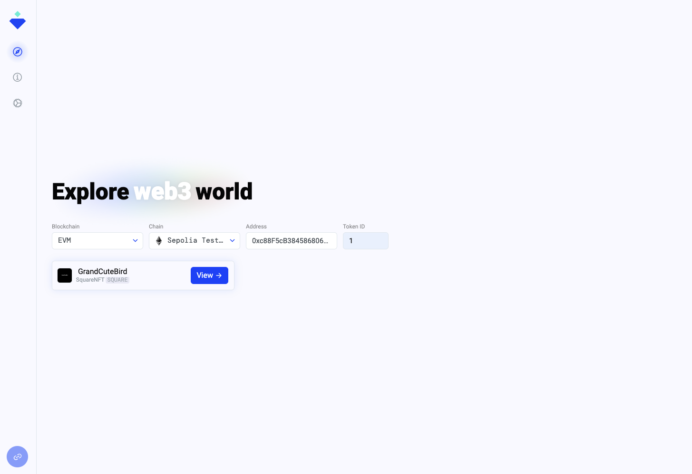
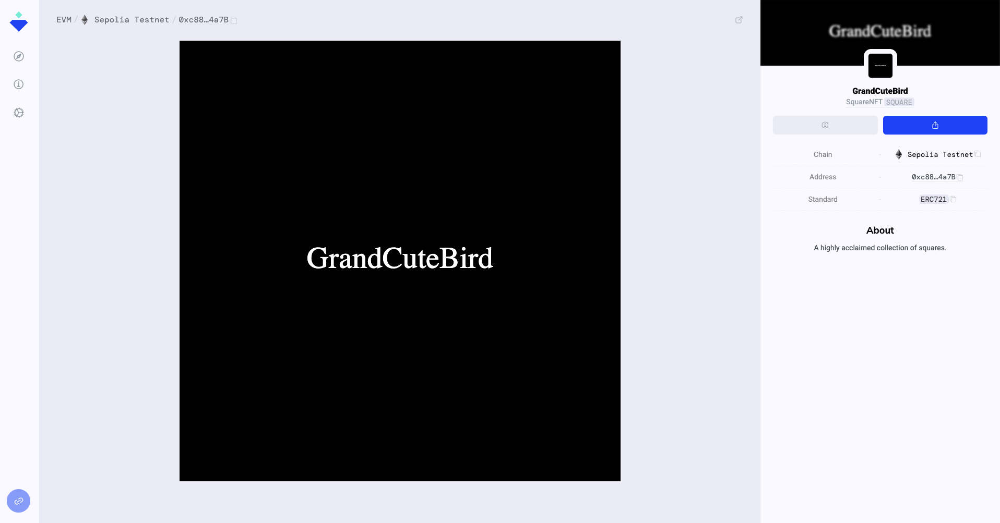

🔤 SVG 画像にランダムに単語を反映させよう
前回のレッスンでは、NFTをオンチェーンで作成するコントラクトを実装しました。
これから、3つのランダムな単語を動的に組み合わせてNFTを出力するコードを作成していきます。
下記のように、MyEpicNFT.solを更新していきましょう。
// MyEpicNFT.sol
// SPDX-License-Identifier: MIT
pragma solidity ^0.8.18;
// いくつかの OpenZeppelin のコントラクトをインポートします。
import "@openzeppelin/contracts/utils/Strings.sol";
import "@openzeppelin/contracts/token/ERC721/extensions/ERC721URIStorage.sol";
// utils ライブラリをインポートして文字列の処理を行います。
import "@openzeppelin/contracts/utils/Counters.sol";
import "hardhat/console.sol";
// インポートした OpenZeppelin のコントラクトを継承しています。
// 継承したコントラクトのメソッドにアクセスできるようになります。
contract MyEpicNFT is ERC721URIStorage {
// OpenZeppelin が tokenIds を簡単に追跡するために提供するライブラリを呼び出しています
using Counters for Counters.Counter;
// _tokenIdsを初期化（_tokenIds = 0）
Counters.Counter private _tokenIds;
// SVGコードを作成します。
// 変更されるのは、表示される単語だけです。
// すべてのNFTにSVGコードを適用するために、baseSvg変数を作成します。
string baseSvg = "<svg xmlns='http://www.w3.org/2000/svg' preserveAspectRatio='xMinYMin meet' viewBox='0 0 350 350'><style>.base { fill: white; font-family: serif; font-size: 24px; }</style><rect width='100%' height='100%' fill='black' /><text x='50%' y='50%' class='base' dominant-baseline='middle' text-anchor='middle'>";
// 3つの配列 string[] に、それぞれランダムな単語を設定しましょう。
string[] firstWords = ["YOUR_WORD", "YOUR_WORD", "YOUR_WORD", "YOUR_WORD", "YOUR_WORD", "YOUR_WORD"];
string[] secondWords = ["YOUR_WORD", "YOUR_WORD", "YOUR_WORD", "YOUR_WORD", "YOUR_WORD", "YOUR_WORD"];
string[] thirdWords = ["YOUR_WORD", "YOUR_WORD", "YOUR_WORD", "YOUR_WORD", "YOUR_WORD", "YOUR_WORD"];
// NFT トークンの名前とそのシンボルを渡します。
constructor() ERC721 ("SquareNFT", "SQUARE") {
console.log("This is my NFT contract.");
}
// シードを生成する関数を作成します。
function random(string memory input) internal pure returns (uint256) {
return uint256(keccak256(abi.encodePacked(input)));
}
// 各配列からランダムに単語を選ぶ関数を3つ作成します。
// pickRandomFirstWord関数は、最初の単語を選びます。
function pickRandomFirstWord(uint256 tokenId) public view returns (string memory) {
// pickRandomFirstWord 関数のシードとなる rand を作成します。
uint256 rand = random(string(abi.encodePacked("FIRST_WORD", Strings.toString(tokenId))));
// seed rand をターミナルに出力する。
console.log("rand seed: ", rand);
// firstWords配列の長さを基準に、rand 番目の単語を選びます。
rand = rand % firstWords.length;
// firstWords配列から何番目の単語が選ばれるかターミナルに出力する。
console.log("rand first word: ", rand);
return firstWords[rand];
}
// pickRandomSecondWord関数は、2番目に表示されるの単語を選びます。
function pickRandomSecondWord(uint256 tokenId) public view returns (string memory) {
// pickRandomSecondWord 関数のシードとなる rand を作成します。
uint256 rand = random(string(abi.encodePacked("SECOND_WORD", Strings.toString(tokenId))));
rand = rand % secondWords.length;
return secondWords[rand];
}
// pickRandomThirdWord関数は、3番目に表示されるの単語を選びます。
function pickRandomThirdWord(uint256 tokenId) public view returns (string memory) {
// pickRandomThirdWord 関数のシードとなる rand を作成します。
uint256 rand = random(string(abi.encodePacked("THIRD_WORD", Strings.toString(tokenId))));
rand = rand % thirdWords.length;
return thirdWords[rand];
}
// ユーザーが NFT を取得するために実行する関数です。
function makeAnEpicNFT() public {
// NFT が Mint されるときのカウンターをインクリメントします。
_tokenIds.increment();
// 現在のtokenIdを取得します。tokenIdは1から始まります。
uint256 newItemId = _tokenIds.current();
// 3つの配列からそれぞれ1つの単語をランダムに取り出します。
string memory first = pickRandomFirstWord(newItemId);
string memory second = pickRandomSecondWord(newItemId);
string memory third = pickRandomThirdWord(newItemId);
// 3つの単語を連結して、<text>タグと<svg>タグで閉じます。
string memory finalSvg = string(abi.encodePacked(baseSvg, first, second, third, "</text></svg>"));
// NFTに出力されるテキストをターミナルに出力します。
console.log("\n--------------------");
console.log(finalSvg);
console.log("--------------------\n");
// msg.sender を使って NFT を送信者に Mint します。
_safeMint(msg.sender, newItemId);
// tokenURI は後で設定します。
// 今は、tokenURI の代わりに、"We will set tokenURI later." を設定します。
_setTokenURI(newItemId, "We will set tokenURI later.");
// NFTがいつ誰に作成されたかを確認します。
console.log("An NFT w/ ID %s has been minted to %s", newItemId, msg.sender);
}
}
簡単にコードの内容を説明していきます。
🏷 SVG 形式でデータを表示できるようにする
baseSvg変数は、SVG形式で単語を表示するために、作成されています。
// MyEpicNFT.sol
string baseSvg = "<svg xmlns='http://www.w3.org/2000/svg' preserveAspectRatio='xMinYMin meet' viewBox='0 0 350 350'><style>.base { fill: white; font-family: serif; font-size: 24px; }</style><rect width='100%' height='100%' fill='black' /><text x='50%' y='50%' class='base' dominant-baseline='middle' text-anchor='middle'>";
makeAnEpicNFT()関数の中で、3つの単語を連結させて1つのテキストを作成します。
下記では、baseSvg変数の中身と、"</text></svg>"で、3つの単語(first、second、third変数に格納された値)を閉じて文字列(string)として連結しています。
// MyEpicNFT.sol
string memory finalSvg = string(abi.encodePacked(baseSvg, first, second, third, "</text></svg>"));
これで、SVG形式で文字のデータをNFT画像として表示できます。
📝 ランダムに組み合わされる単語を設定する
// MyEpicNFT.sol
string[] firstWords = ["YOUR_WORD", "YOUR_WORD", "YOUR_WORD", "YOUR_WORD", "YOUR_WORD", "YOUR_WORD"];
string[] secondWords = ["YOUR_WORD", "YOUR_WORD", "YOUR_WORD", "YOUR_WORD", "YOUR_WORD", "YOUR_WORD"];
string[] thirdWords = ["YOUR_WORD", "YOUR_WORD", "YOUR_WORD", "YOUR_WORD", "YOUR_WORD", "YOUR_WORD"];
YOUR_WORDに好きな単語を入力してください。
ランダム性を担保するため、配列ごとに15〜20単語程度を格納することをお勧めします。今回の例では、簡単のため6単語を表記しています。
私の配列は下記のようになっています。
string[] firstWords = ["Epic", "Fantastic", "Crude", "Crazy", "Hysterical", "Grand"];
string[] secondWords = ["Meta", "Live", "Pop", "Cute", "Sweet", "Hot"];
string[] thirdWords = ["Kitten", "Puppy", "Monkey", "Bird", "Panda", "Elephant"];
🥴 乱数を生成して、単語をランダムに組み合わせる
下記のコードでは、string[] firstWords配列からランダムに単語を選ぶ関数を作成しています。
pickRandomFirstWord関数は、NFT画像に1番目に表示される単語を選びます。
// MyEpicNFT.sol
function pickRandomFirstWord(uint256 tokenId) public view returns (string memory)
{
// pickRandomFirstWord 関数のシードとなる rand を作成します。
uint256 rand = random(string(abi.encodePacked("FIRST_WORD", Strings.toString(tokenId))));
// firstWords配列の長さを基準に、rand 番目の単語を選びます。
rand = rand % firstWords.length;
return firstWords[rand];
}
ここで1つ重要なことを覚えておきましょう。
それは、スマートコントラクトで乱数を生成することは、たいへん難しいということです。
通常のプログラムでは、PCのファンの速度、CPUの温度、インターネット速度など制御が難しい数値を変数に設定し、これらの数値を組み合わせて、「ランダム」な数値を生成するアルゴリズムを作成します。
ですが、ブロックチェーンにおいて、スマートコントラクトは一般に公開されているため、プログラムがどの数値を変数として使用しているのか誰でも確認できてしまいます。
これが、スマートコントラクトで乱数を生成することが難しいと言われている理由です。
今回のプロジェクトでは、下記の方法を用いて、乱数を生成しています。
下記のコードを見ていきましょう。
// MyEpicNFT.sol
uint256 rand = random(string(abi.encodePacked("FIRST_WORD", Strings.toString(tokenId))));
ここでは、文字列FIRST_WORDと、Strings.toString()により文字列化されたtokenIdの2つの値をabi.encodePackedを使用して結合し、randに格納しています。
randに格納されているのは、次のような値です。
96777463446932378109744360884080025980584389114515208476196941633474201541706
randは、乱数を生成するための「種」です。ですので、値そのものに意味はありません。
次に、次のコードを見ていきましょう。
// MyEpicNFT.sol
rand = rand % firstWords.length;
return firstWords[rand];
ここでは、firstWords配列の長さを基準に、rand番目の単語を選んでいます。
%は、整数の割り算における余りを返します。
下記のような例では、%により割り算の余りが整数で返されます。
1 % 2 = 1 // 1が余り
2 % 2 = 0 // 0が余り
rand = rand % firstWords.lengthでは、0からfirstWords.length - 1の間の任意の値をrandに格納しています。
これにより、firstWords配列からランダムに値を選べます。
私の
firstWords配列には6つの単語が格納されています。Solidityでは、配列に最初に格納されている値を
0番目ととらえます。したがって、私の例では、
rand % firstWords.lengthによって、0から5までの値が1つ返されます。
⚠️: 注意
上記のアルゴリズムは、完全なランダム性を持ちません。
今回乱数を使用するのは、あくまで「文字列の生成」のためなので、強固なランダム性は必要ではありません。
例えば、「ランダムにユーザーを選んで、ETH を送金する」ようなプログラムを実装する際は、さらに強固な乱数生成のアルゴリズムを実装することになります。
今回のプロジェクトでは、その必要がないので、上記のアルゴリズムを採用します。
Solidityは、インプットが同じであれば必ず同じ結果が出力されるように設計されているため、公式な乱数生成の処理をサポートするライブラリを提供していません。
Solidityにおける乱数生成の方法に興味があれば、Chainlink（英語） のドキュメントを参照してみましょう。
👩🔬 自動テストを作成してみよう
スマートコントラクトに新たな機能が追加されたので、それに伴い自動テストを作成してみましょう。
HardHatには、testディレクトリ内に格納されたテストコードをnpx hardhat testコマンドを実行することで、自動的にテストを走らせてくれる機能があります。今回作成するテストは、スマートコントラクト内に定義した各関数を1つずつテストするユニットテスト（unit test）と呼ばれるものです。実際にスマートコントラクトをデプロイして機能を使う前段階として、その機能が期待する動作を行うか確認することができるテストとなります。
Hardhatの自動テストを利用して、スマートコントラクトの機能をテストしてみましょう。
まずは、packages/contract/testディレクトリ内にMyEpicNFT.jsというファイルを作成します。
packages/
└──contract/
└── test/
+ └── MyEpicNFT.js
続いて、作成したMyEpicNFT.jsに以下のコードを書き込みます。
const { loadFixture } = require('@nomicfoundation/hardhat-network-helpers');
const { ethers } = require('hardhat');
const { expect } = require('chai');
describe('MyEpicNFT', function () {
// 各テストの前に呼び出す関数です。テストで使用する変数やコントラクトのデプロイを行います。
async function deployMyEpicNFTFixture() {
// テストアカウントを取得します。
const [owner] = await ethers.getSigners();
// コントラクト内で使用する単語の配列を定義します。
const firstWords = [
'Epic',
'Fantastic',
'Crude',
'Crazy',
'Hysterical',
'Grand',
];
const secondWords = ['Meta', 'Live', 'Pop', 'Cute', 'Sweet', 'Hot'];
const thirdWords = [
'Kitten',
'Puppy',
'Monkey',
'Bird',
'Panda',
'Elephant',
];
// コントラクトのインスタンスを生成し、デプロイを行います。
const MyEpicNFTFactory = await ethers.getContractFactory('MyEpicNFT');
const MyEpicNFT = await MyEpicNFTFactory.deploy();
return { MyEpicNFT, owner, firstWords, secondWords, thirdWords };
}
describe('pickRandomFirstWord', function () {
it('should get strings in firstWords', async function () {
// テストの準備を行います。
const { MyEpicNFT, firstWords } = await loadFixture(
deployMyEpicNFTFixture,
);
// テストを行う関数を呼び出し、結果を確認します。
expect(firstWords).to.include(await MyEpicNFT.pickRandomFirstWord(0));
});
});
describe('pickRandomSecondWord', function () {
it('should get strings in secondWords', async function () {
const { MyEpicNFT, secondWords } = await loadFixture(
deployMyEpicNFTFixture,
);
expect(secondWords).to.include(await MyEpicNFT.pickRandomSecondWord(0));
});
});
describe('pickRandomThirdWord', function () {
it('should get strings in thirdWords', async function () {
const { MyEpicNFT, thirdWords } = await loadFixture(
deployMyEpicNFTFixture,
);
expect(thirdWords).to.include(await MyEpicNFT.pickRandomThirdWord(0));
});
});
});
コードの内容を簡単にみていきましょう。
最初に定義したのは、各テストの前に実行するdeployMyEpicNFTFixture関数です。実際に機能をテストしたいコントラクト内の関数を呼び出すための、準備を行う関数となります。
その中で定義している文字列の配列は、ご自身がMyEpicNFTコントラクト内で定義したものと一致するように適宜変更してください。
// コントラクト内で使用する単語の配列を定義します。
const firstWords = [
'Epic',
'Fantastic',
'Crude',
'Crazy',
'Hysterical',
'Grand',
];
const secondWords = ['Meta', 'Live', 'Pop', 'Cute', 'Sweet', 'Hot'];
const thirdWords = [
'Kitten',
'Puppy',
'Monkey',
'Bird',
'Panda',
'Elephant',
];
deployMyEpicNFTFixture関数の後に続く3つのdescribeブロックが、実際にMyEpicNFTコントラクト内の各関数を呼び出してテストを行なっている部分になります。
describe('pickRandomFirstWord', function () {
it('should get strings in firstWords', async function () {
// テストの準備を行います。
const { MyEpicNFT, firstWords } = await loadFixture(
deployMyEpicNFTFixture,
);
// テストを行う関数を呼び出し、結果を確認します。
expect(firstWords).to.include(await MyEpicNFT.pickRandomFirstWord(0));
});
});
describe()にテストをする関数名を定義し、it()に期待する動作を記述しています。
テスト部分は、準備フェーズと実行・確認フェーズがあります。
準備フェーズでは、MyEpicNFTコントラクトのデプロイやテストで使用する変数を取得します。
実行・確認フェーズでは、実際にMyEpicNFTコントラクトの関数を呼び出し、その結果を確認しています。ここでは、includeという機能を利用してpickRandomFirstWord関数が返す値がfirstWords変数（配列）に含まれているかどうかを確認しています。
それでは、作成したテストを実行してみましょう。
ETH-NFT-Collectionディレクトリ直下にいることを確認して、次のコマンドを実行しましょう。
yarn contract test
以下のような結果が出力されていれば成功です。
MyEpicNFT
pickRandomFirstWord
This is my NFT contract.
rand - seed: 96777463446932378109744360884080025980584389114515208476196941633474201541706
rand - first word: 0
✔ should get strings in firstWords (1457ms)
pickRandomSecondWord
✔ should get strings in secondWords
pickRandomThirdWord
✔ should get strings in thirdWords
3 passing (1s)
このように、自動テストでは定義したテストの通過結果が出力されます。
自動テストを全て通過したことが確認できたら、次にデプロイスクリプトを実行してどのような生成物となるのか、console.logの出力を確認してみましょう。
yarn contract deploy
下記のような結果がターミナルに出力されていれば成功です。
This is my NFT contract.
Contract deployed to: 0x5FbDB2315678afecb367f032d93F642f64180aa3
rand seed: 65185702252814965187814840607877062151565847602989074464506246984646613707935
rand first word: 5
--------------------
<svg xmlns='http://www.w3.org/2000/svg' preserveAspectRatio='xMinYMin meet' viewBox='0 0 350 350'><style>.base { fill: white; font-family: serif; font-size: 24px; }</style><rect width='100%' height='100%' fill='black' /><text x='50%' y='50%' class='base' dominant-baseline='middle' text-anchor='middle'>GrandCuteBird</text></svg>
--------------------
An NFT w/ ID 1 has been minted to 0xf39fd6e51aad88f6f4ce6ab8827279cfffb92266
rand seed: 96445078978764644421284389660229487437599027044178555220123200120157360355557
rand first word: 5
--------------------
<svg xmlns='http://www.w3.org/2000/svg' preserveAspectRatio='xMinYMin meet' viewBox='0 0 350 350'><style>.base { fill: white; font-family: serif; font-size: 24px; }</style><rect width='100%' height='100%' fill='black' /><text x='50%' y='50%' class='base' dominant-baseline='middle' text-anchor='middle'>GrandMetaPanda</text></svg>
--------------------
An NFT w/ ID 2 has been minted to 0xf39fd6e51aad88f6f4ce6ab8827279cfffb92266
ターミナルに出力されたSVGの1つをコピーして、ここに貼り付け、中身を確認してみましょう。
下記のような結果が表示されていればテストは成功です。 
👩💻 メタデータを動的に生成する
次に、JSONファイル（＝メタデータ）を設定する必要があります。
追加でいくつか関数を作成する必要があります。
package/contract/contractsディレクトリの下にlibrariesというディレクトリを作成しましょう。
下記のディレクトリ構図を参考にしてください。
packages/
└──contract/
└── contracts/
├── MyEpicNFT.sol
+ └── libraries/
librariesディレクトリにBase64.solという名前のファイルを作成し、下記のコードを貼り付けてください。
// Base64.sol
// SPDX-License-Identifier: MIT
pragma solidity ^0.8.18;
/// [MIT License]
/// @title Base64
/// @notice Provides a function for encoding some bytes in base64
/// @author Brecht Devos <brecht@loopring.org>
library Base64 {
bytes internal constant TABLE =
"ABCDEFGHIJKLMNOPQRSTUVWXYZabcdefghijklmnopqrstuvwxyz0123456789+/";
/// @notice Encodes some bytes to the base64 representation
function encode(bytes memory data) internal pure returns (string memory) {
uint256 len = data.length;
if (len == 0) return "";
// multiply by 4/3 rounded up
uint256 encodedLen = 4 * ((len + 2) / 3);
// Add some extra buffer at the end
bytes memory result = new bytes(encodedLen + 32);
bytes memory table = TABLE;
assembly {
let tablePtr := add(table, 1)
let resultPtr := add(result, 32)
for {
let i := 0
} lt(i, len) {
} {
i := add(i, 3)
let input := and(mload(add(data, i)), 0xFFFFFF)
let out := mload(add(tablePtr, and(shr(18, input), 0x3F)))
out := shl(8, out)
out := add(
out,
and(mload(add(tablePtr, and(shr(12, input), 0x3F))), 0xFF)
)
out := shl(8, out)
out := add(
out,
and(mload(add(tablePtr, and(shr(6, input), 0x3F))), 0xFF)
)
out := shl(8, out)
out := add(
out,
and(mload(add(tablePtr, and(input, 0x3F))), 0xFF)
)
out := shl(224, out)
mstore(resultPtr, out)
resultPtr := add(resultPtr, 4)
}
switch mod(len, 3)
case 1 {
mstore(sub(resultPtr, 2), shl(240, 0x3D3D))
}
case 2 {
mstore(sub(resultPtr, 1), shl(248, 0x3D))
}
mstore(result, encodedLen)
}
return string(result);
}
}
このファイルには、SVGとJSONをBase64に変換するための関数が含まれています。
MyEpicNFT.solも下記のように更新しましょう。
// MyEpicNFT.sol
// SPDX-License-Identifier: MIT
pragma solidity ^0.8.18;
// いくつかの OpenZeppelin のコントラクトをインポートします。
import "@openzeppelin/contracts/utils/Strings.sol";
import "@openzeppelin/contracts/token/ERC721/extensions/ERC721URIStorage.sol";
// utils ライブラリをインポートして文字列の処理を行います。
import "@openzeppelin/contracts/utils/Counters.sol";
import "hardhat/console.sol";
// Base64.solコントラクトからSVGとJSONをBase64に変換する関数をインポートします。
import { Base64 } from "./libraries/Base64.sol";
// インポートした OpenZeppelin のコントラクトを継承しています。
// 継承したコントラクトのメソッドにアクセスできるようになります。
contract MyEpicNFT is ERC721URIStorage {
// OpenZeppelin が tokenIds を簡単に追跡するために提供するライブラリを呼び出しています
using Counters for Counters.Counter;
// _tokenIdsを初期化（_tokenIds = 0）
Counters.Counter private _tokenIds;
// SVGコードを作成します。
// 変更されるのは、表示される単語だけです。
// すべてのNFTにSVGコードを適用するために、baseSvg変数を作成します。
string baseSvg = "<svg xmlns='http://www.w3.org/2000/svg' preserveAspectRatio='xMinYMin meet' viewBox='0 0 350 350'><style>.base { fill: white; font-family: serif; font-size: 24px; }</style><rect width='100%' height='100%' fill='black' /><text x='50%' y='50%' class='base' dominant-baseline='middle' text-anchor='middle'>";
// 3つの配列 string[] に、それぞれランダムな単語を設定しましょう。
string[] firstWords = ["YOUR_WORD", "YOUR_WORD", "YOUR_WORD", "YOUR_WORD", "YOUR_WORD", "YOUR_WORD"];
string[] secondWords = ["YOUR_WORD", "YOUR_WORD", "YOUR_WORD", "YOUR_WORD", "YOUR_WORD", "YOUR_WORD"];
string[] thirdWords = ["YOUR_WORD", "YOUR_WORD", "YOUR_WORD", "YOUR_WORD", "YOUR_WORD", "YOUR_WORD"];
// NFT トークンの名前とそのシンボルを渡します。
constructor() ERC721 ("SquareNFT", "SQUARE") {
console.log("This is my NFT contract.");
}
// シードを生成する関数を作成します。
function random(string memory input) internal pure returns (uint256) {
return uint256(keccak256(abi.encodePacked(input)));
}
// 各配列からランダムに単語を選ぶ関数を3つ作成します。
// pickRandomFirstWord関数は、最初の単語を選びます。
function pickRandomFirstWord(uint256 tokenId) public view returns (string memory) {
// pickRandomFirstWord 関数のシードとなる rand を作成します。
uint256 rand = random(string(abi.encodePacked("FIRST_WORD", Strings.toString(tokenId))));
// seed rand をターミナルに出力する。
console.log("rand - seed: ", rand);
// firstWords配列の長さを基準に、rand 番目の単語を選びます。
rand = rand % firstWords.length;
// firstWords配列から何番目の単語が選ばれるかターミナルに出力する。
console.log("rand - first word: ", rand);
return firstWords[rand];
}
// pickRandomSecondWord関数は、2番目に表示されるの単語を選びます。
function pickRandomSecondWord(uint256 tokenId) public view returns (string memory) {
// pickRandomSecondWord 関数のシードとなる rand を作成します。
uint256 rand = random(string(abi.encodePacked("SECOND_WORD", Strings.toString(tokenId))));
rand = rand % secondWords.length;
return secondWords[rand];
}
// pickRandomThirdWord関数は、3番目に表示されるの単語を選びます。
function pickRandomThirdWord(uint256 tokenId) public view returns (string memory) {
// pickRandomThirdWord 関数のシードとなる rand を作成します。
uint256 rand = random(string(abi.encodePacked("THIRD_WORD", Strings.toString(tokenId))));
rand = rand % thirdWords.length;
return thirdWords[rand];
}
// ユーザーが NFT を取得するために実行する関数です。
function makeAnEpicNFT() public {
// NFT が Mint されるときのカウンターをインクリメントします。
_tokenIds.increment();
// 現在のtokenIdを取得します。tokenIdは1から始まります。
uint256 newItemId = _tokenIds.current();
// 3つの配列からそれぞれ1つの単語をランダムに取り出します。
string memory first = pickRandomFirstWord(newItemId);
string memory second = pickRandomSecondWord(newItemId);
string memory third = pickRandomThirdWord(newItemId);
// 3つの単語を連携して格納する変数 combinedWord を定義します。
string memory combinedWord = string(abi.encodePacked(first, second, third));
// 3つの単語を連結して、<text>タグと<svg>タグで閉じます。
string memory finalSvg = string(abi.encodePacked(baseSvg, combinedWord, "</text></svg>"));
// NFTに出力されるテキストをターミナルに出力します。
console.log("\n----- SVG data -----");
console.log(finalSvg);
console.log("--------------------\n");
// JSONファイルを所定の位置に取得し、base64としてエンコードします。
string memory json = Base64.encode(
bytes(
string(
abi.encodePacked(
'{"name": "',
// NFTのタイトルを生成される言葉（例: GrandCuteBird）に設定します。
combinedWord,
'", "description": "A highly acclaimed collection of squares.", "image": "data:image/svg+xml;base64,',
// data:image/svg+xml;base64 を追加し、SVG を base64 でエンコードした結果を追加します。
Base64.encode(bytes(finalSvg)),
'"}'
)
)
)
);
// データの先頭に data:application/json;base64 を追加します。
string memory finalTokenUri = string(
abi.encodePacked("data:application/json;base64,", json)
);
console.log("\n----- Token URI ----");
console.log(finalTokenUri);
console.log("--------------------\n");
// msg.sender を使って NFT を送信者に Mint します。
_safeMint(msg.sender, newItemId);
// tokenURIを更新します。
_setTokenURI(newItemId, finalTokenUri);
// NFTがいつ誰に作成されたかを確認します。
console.log("An NFT w/ ID %s has been minted to %s", newItemId, msg.sender);
}
}
追加したコードを見ていきましょう。
// MyEpicNFT.sol
import { Base64 } from "./libraries/Base64.sol";
ここでは、先ほど追加したBase64.solから、SVGデータとJSONファイルをBase64に変換する関数をインポートしています。
次に、下記のコードを見ていきましょう。
// MyEpicNFT.sol
string memory combinedWord = string(abi.encodePacked(first, second, third));
ここでは、3つの単語を組み合わせた言葉（例: GrandCuteBird）をcombinedWord変数に格納しています。
次に、下記のコードを見ていきましょう。
// MyEpicNFT.sol
// JSONファイルを所定の位置に取得し、base64としてエンコードします。
string memory json = Base64.encode(
bytes(
string(
abi.encodePacked(
'{"name": "',
// NFTのタイトルを生成される言葉（例: GrandCuteBird）に設定します。
combinedWord,
'", "description": "A highly acclaimed collection of squares.", "image": "data:image/svg+xml;base64,',
// data:image/svg+xml;base64 を追加し、SVG を base64 でエンコードした結果を追加します。
Base64.encode(bytes(finalSvg)),
'"}'
)
)
)
);
ここでは、JSONファイルのメタデータをbase64でエンコードしています。
この処理によって、メタデータがオンチェーンに書き込まれ、コントラクトの中に組み込まれます。
nameでは、base64でエンコードされたSVGデータを追加しています。
次に、下記のコードを見ていきましょう。
// MyEpicNFT.sol
string memory finalTokenUri = string(
abi.encodePacked("data:application/json;base64,", json)
);
ここでは、data:application/json;base64,の後ろにbase64でエンコードされたメタデータを結合させ、finalTokenUri変数に格納しています。
最後に、下記のコードを見ていきましょう。
// MyEpicNFT.sol
_setTokenURI(newItemId, finalTokenUri);
ここでは、tokenURIを更新しています。
この処理は、あなたのSVGデータが組み込まれたJSONのメタデータをコントラクトと紐付けます。
⭐️ 実行する
それでは、ターミナルに向かい、ETH-NFT-Collectionディレクトリ直下で、下記を実行しましょう。
yarn contract deploy
ターミナルに下記のような結果が出力されていることを確認しましょう。
Compiled 2 Solidity files successfully
This is my NFT contract.
Contract deployed to: 0x5FbDB2315678afecb367f032d93F642f64180aa3
rand seed: 65185702252814965187814840607877062151565847602989074464506246984646613707935
rand first word: 5
----- SVG data -----
<svg xmlns='http://www.w3.org/2000/svg' preserveAspectRatio='xMinYMin meet' viewBox='0 0 350 350'><style>.base { fill: white; font-family: serif; font-size: 24px; }</style><rect width='100%' height='100%' fill='black' /><text x='50%' y='50%' class='base' dominant-baseline='middle' text-anchor='middle'>GrandCuteBird</text></svg>
--------------------
----- Token URI ----

--------------------
An NFT w/ ID 1 has been minted to 0xf39fd6e51aad88f6f4ce6ab8827279cfffb92266
rand seed: 96445078978764644421284389660229487437599027044178555220123200120157360355557
rand first word: 5
----- SVG data -----
<svg xmlns='http://www.w3.org/2000/svg' preserveAspectRatio='xMinYMin meet' viewBox='0 0 350 350'><style>.base { fill: white; font-family: serif; font-size: 24px; }</style><rect width='100%' height='100%' fill='black' /><text x='50%' y='50%' class='base' dominant-baseline='middle' text-anchor='middle'>GrandMetaPanda</text></svg>
--------------------
----- Token URI ----

--------------------
An NFT w/ ID 2 has been minted to 0xf39fd6e51aad88f6f4ce6ab8827279cfffb92266
🛠 finalTokenUriの中身を確認しよう
ターミナルに出力されたToken URIの1つをコピーして、NFT Preview に貼り付け、中身を確認してみましょう。
NFT Previewを使用すれば、テストネットにデプロイしなくても、JSONファイルからSVGデータを確認できます。
下記のようにToken URIが画像として確認できれば、テストは成功です。

🚀 Sepolia Test Network にデプロイする
それでは、コントラクトを再度デプロイしましょう。
まずは、deploy.jsを下記のように更新してください。
- 変更点は、2つ目のNFT発行を削除しているだけです。
// deploy.js
async function main() {
// コントラクトがコンパイルします
// コントラクトを扱うために必要なファイルが `artifacts` ディレクトリの直下に生成されます。
const nftContractFactory = await hre.ethers.getContractFactory('MyEpicNFT');
// Hardhat がローカルの Ethereum ネットワークを作成します。
const nftContract = await nftContractFactory.deploy();
// コントラクトが Mint され、ローカルのブロックチェーンにデプロイされるまで待ちます。
await nftContract.deployed();
console.log('Contract deployed to:', nftContract.address);
// makeAnEpicNFT 関数を呼び出す。NFT が Mint される。
const txn = await nftContract.makeAnEpicNFT();
// Minting が仮想マイナーにより、承認されるのを待ちます。
await txn.wait();
console.log('Minted NFT #1');
}
main().catch((error) => {
console.error(error);
process.exitCode = 1;
});
続いて、デプロイコマンドを実行します。
yarn contract deploy:sepolia
下記のような結果がターミナルに表示されていれば、テストネットへのデプロイは成功です。
Contract deployed to: 0x2bE00D9524E37A432B695A033912709ecEb64Cfa
Minted NFT #1
最後に、gemcase へアクセスをして、ミントされたNFTを確認してみましょう。
下記のように、あなたのSquareNFTがgemcaseで確認できたでしょうか？ 

🙋♂️ 質問する
ここまでの作業で何かわからないことがある場合は、Discordの#ethereumで質問をしてください。
ヘルプをするときのフローが円滑になるので、エラーレポートには下記の3点を記載してください ✨
1. 質問が関連しているセクション番号とレッスン番号
2. 何をしようとしていたか
3. エラー文をコピー&ペースト
4. エラー画面のスクリーンショット
おめでとうございます! セクション3はもう少しで終了です ✨
あなたのgemcaseのリンクを#ethereumに貼り付けて、コミュニティにシェアしてください 😊
どんなNFTを作ったのか気になります 🔥
コミュニティへの投稿が済んだら、次のレッスンに進んで、ユーザーがNFTを発行できるWebサイトを構築しましょう 🎉